독일 브랜드 168
독일에서 시작한 브랜드 168개를 로고와 함께 모았습니다. 대표적인 독일 브랜드로는 폭스바겐(Volkswagen), 아우디(Audi), 루프트한자(Lufthansa), 오펠(Opel), 지멘스(SIEMENS), 메르세데스-벤츠 그룹 AG(Mercedes-Benz Group) 등이 있습니다. 수록 기준은 검수된 브랜드 설명이나 공식 웹사이트가 일치하는 위키데이터 개체에서 기원 국가가 확인된 경우로 한정했습니다.
다른 국가 보기
국가별 전체 →산업별로는 식음료 53개, 미디어·엔터테인먼트 33개, 모빌리티 20개, 리테일·커머스 16개 순입니다. 설립연도가 확인된 브랜드는 131개이며 가장 오래된 곳은 1803년, 가장 최근은 2019년에 시작했습니다. 시기별로는 1900년 이전 54개, 1900~1949년 23개, 1950~1999년 48개, 2000년 이후 6개입니다. 수록 자료로는 로고 이미지 158개, 로고 변천 자료 23개, 연혁 타임라인 11개를 갖췄습니다. 이 가운데 141개는 공식 웹사이트가 일치하는 위키데이터 개체로 연결해 두었습니다.
독일 브랜드 목록
 아우디Audi독일 · 1909년
아우디Audi독일 · 1909년아우디(Audi)는 독일 잉골슈타트에 본사를 둔 폭스바겐 그룹 산하 프리미엄 자동차 제조사이다.
 웰라WELLA독일 · 1880년
웰라WELLA독일 · 1880년웰라(Wella)는 1880년 독일에서 시작된 전문가용·소비자용 헤어케어 브랜드이다.
 지멘스SIEMENS독일 · 1847년
지멘스SIEMENS독일 · 1847년지멘스(Siemens)는 1847년 베를린에서 창립해 산업자동화·전기·철도·의료기술을 아우르는 독일의 다국적 산업·전기 기업이다.
휴고 보스HUGO BOSS독일 · 1924년휴고 보스(Hugo Boss)는 1924년 독일 메칭겐에서 후고 페르디난트 보스가 설립한 독일 패션 기업이다.
 아디다스ADIDAS독일
아디다스ADIDAS독일아디다스(adidas AG)는 1949년 아디 다슬러(Adolf Dassler)가 독일 헤르초게나우라흐에서 설립한 스포츠웨어 기업으로…
 푸마Puma독일
푸마Puma독일푸마(Puma)는 독일 헤르초겐아우라흐에 본사를 둔 스포츠 의류·신발 기업이다.
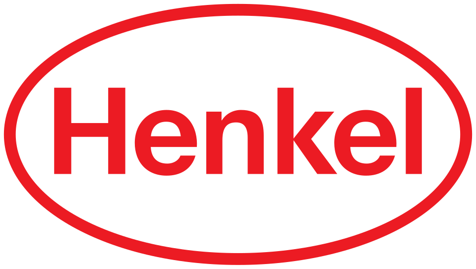
헨켈Henkel독일 · 1876년헨켈(Henkel)은 1876년 독일에서 설립된 생활화학·접착기술 분야의 다국적 소비재 대기업이다.
 갈레리아 카우프호프Galeria Kaufhof독일 · 2019년
갈레리아 카우프호프Galeria Kaufhof독일 · 2019년갈레리아 카우프호프(Galeria Kaufhof)는 독일에 마지막으로 남은 대형 백화점 체인이다.
 뉴요커New Yorker독일 · 1971년
뉴요커New Yorker독일 · 1971년뉴요커(New Yorker)는 1971년 독일에서 시작된 청소년 중심의 패스트패션 의류 소매 브랜드이다.
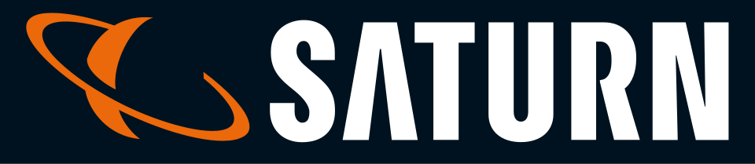
자툰Saturn독일 · 1961년자툰(Saturn)은 1961년 독일 쾰른에서 시작된 가전·전자제품 양판점 체인이다.
 에어업Air up독일
에어업Air up독일에어업(air up)은 독일 뮌헨에 본사를 둔 음료 스타트업으로, 향(스멜)만으로 맛을 입히는 리필형 물병 시스템을 만든다.
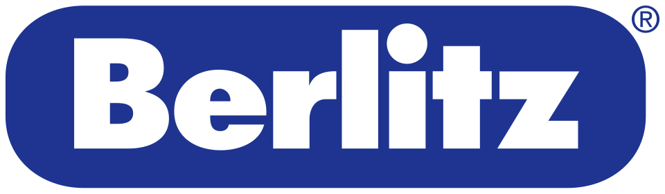
베를리츠Berlitz Corporation독일 · 1878년베를리츠(Berlitz)는 몰입식 교수법으로 알려진 미국 기원의 글로벌 어학교육 기업이다.
 레베 그룹REWE Group독일 · 1927년
레베 그룹REWE Group독일 · 1927년레베 그룹(REWE Group)은 1927년 독일 쾰른에서 설립된 협동조합 기반 대형 식품유통 그룹이다.
 메르세데스-벤츠Mercedes-Benz독일
메르세데스-벤츠Mercedes-Benz독일메르세데스-벤츠(Mercedes-Benz)는 독일 슈투트가르트에 본사를 둔 프리미엄 자동차 브랜드이다.
 리모와Rimowa독일 · 1898년
리모와Rimowa독일 · 1898년리모와(RIMOWA)는 1898년 파울 모르첵이 독일 쾰른에서 설립한 프리미엄 여행가방 브랜드다.
 디엠-드로게리 마크트dm-drogerie markt독일 · 1973년
디엠-드로게리 마크트dm-drogerie markt독일 · 1973년데엠(dm-drogerie markt)은 화장품·헬스케어·생활용품을 판매하는 독일 최대 드럭스토어 소매 체인이다.
 메르세데스-마이바흐Maybach독일 · 2014년
메르세데스-마이바흐Maybach독일 · 2014년메르세데스-마이바흐(Maybach)는 2013년 기존 마이바흐 브랜드의 철수 이후 2014년에 메르세데스-마이바흐 S클래스를 생산하며 재탄생한…
 보그바르트Borgward독일 · 1933년
보그바르트Borgward독일 · 1933년보그바르트(Borgward)는 독일 브레멘에 본사를 두고 Carl F.
폭스바겐Volkswagen독일 · 1937년폭스바겐(Volkswagen)은 1937년 독일 베를린에서 설립된 자동차 제조 회사이다.
 도이체 텔레콤Deutsche Telekom독일 · 1995년
도이체 텔레콤Deutsche Telekom독일 · 1995년도이체 텔레콤(Deutsche Telekom)은 독일 본에 본사를 둔 부분 국영 통신 기업이다.
 콘티넨탈 AGContinental AG독일 · 1871년
콘티넨탈 AGContinental AG독일 · 1871년콘티넨탈 AG(Continental AG)는 1871년에 설립되어 독일 하노버에 본사를 둔 다국적 기업으로, 타이어와 산업용 고무·열가소성…
 폭스바겐 AGVolkswagen Group독일 · 1937년
폭스바겐 AGVolkswagen Group독일 · 1937년폭스바겐 AG(Volkswagen Group)는 독일 볼프스부르크에 본사를 둔 다국적 자동차 제조 복합기업이다.
 도이체 포스트DHL Group독일 · 1995년
도이체 포스트DHL Group독일 · 1995년도이체 포스트(DHL Group)는 독일 본에 본사를 둔 다국적 소포 배송 및 공급망 관리 기업이다.
 에스콤Escom독일 · 1986년
에스콤Escom독일 · 1986년에스콤(Escom)은 1986년 독일에서 출발한 PC 제조·소매 기업으로 1996년 파산한 과거 기업이다.
 알리안츠Allianz SE독일 · 1890년
알리안츠Allianz SE독일 · 1890년알리안츠(Allianz SE)는 독일 뮌헨에 본사를 둔 다국적 금융 서비스 기업이다.
 바이온텍BioNTech독일 · 2008년
바이온텍BioNTech독일 · 2008년바이온텍(BioNTech)은 독일 마인츠에 본사를 둔 생명공학 기업이다.
 칼자이스Carl Zeiss AG독일 · 1846년
칼자이스Carl Zeiss AG독일 · 1846년칼자이스(Carl Zeiss AG)는 1846년 독일 예나에서 Carl Zeiss가 설립한 광학 회사이다.
 스타인웨이Steinway & Sons독일 · 1853년
스타인웨이Steinway & Sons독일 · 1853년스타인웨이(Steinway & Sons)는 독일과 미국 소재의 수제 피아노 브랜드이다.
 아우토 유니언Auto Union독일 · 1932년
아우토 유니언Auto Union독일 · 1932년아우토 유니언(Auto Union)은 1932년 독일에서 네 개의 자동차 제조사가 합병해 세운 회사이다.
 파버카스텔Faber-Castell독일
파버카스텔Faber-Castell독일파버카스텔(Faber-Castell)은 1761년 독일에서 설립된 필기구 제조 회사로, 연필과 색연필, 지우개, 만년필 등을 생산한다.
TUI (기업)TUI Group독일 · 1968년TUI(TUI Group)는 독일 하노버에 본사를 둔 다국적 레저·여행·관광 기업이다.
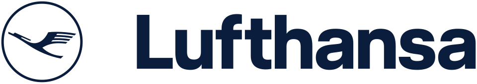
루프트한자Lufthansa독일 · 1926년루프트한자(독일어: Lufthansa)는 독일의 국책항공사로, 독일 노르트라인베스트팔렌주 쾰른에 본사를 두고 있다.
 크롬바커 바이젠Krombacher Brauerei독일 · 1803년
크롬바커 바이젠Krombacher Brauerei독일 · 1803년크롬바커 바이젠(Krombacher Brauerei)은 독일 Kreuztal에 본사를 둔 양조회사이다.
 에르딩거Erdinger독일 · 1886년
에르딩거Erdinger독일 · 1886년에르딩거(Erdinger)는 독일 에르딩에 본사를 둔 양조장이자 그 맥주 브랜드이다.
 코메르츠방크Commerzbank AG독일 · 1870년
코메르츠방크Commerzbank AG독일 · 1870년코메르츠방크(Commerzbank AG)는 독일 프랑크푸르트암마인에 본사를 둔 유럽의 은행이다.
 도이체 방크Deutsche Bank독일 · 1870년
도이체 방크Deutsche Bank독일 · 1870년도이체 방크(Deutsche Bank)는 독일 프랑크푸르트에 본사를 둔 주요 상업은행이자 세계적인 투자은행이다.
 메르세데스-AMGMercedes-AMG독일 · 1812년
메르세데스-AMGMercedes-AMG독일 · 1812년메르세데스-AMG(Mercedes-AMG)는 독일 아팔터바흐에 본사를 둔 자동차 및 엔진 제조 회사이다.
 NSU 모토렌베르케NSU Motorenwerke독일 · 1873년
NSU 모토렌베르케NSU Motorenwerke독일 · 1873년NSU 모토렌베르케(NSU Motorenwerke)는 1873년에 설립된 독일의 자동차·오토바이·자전거 제조사이다.
 아에게AEG독일 · 1883년
아에게AEG독일 · 1883년AEG(아에게)는 1883년 독일 베를린에서 Emil Rathenau가 설립한 전기설비 제조사이며, 현재는 스웨덴 기업 일렉트로룩스가 소유한…
 메르클린Märklin독일 · 1859년
메르클린Märklin독일 · 1859년메르클린(Märklin)은 독일 괴핑겐에 본사를 둔 장난감 기업이다.
 브라운Braun독일 · 1921년
브라운Braun독일 · 1921년브라운(Braun)은 1921년에 설립된 독일의 소비재 제조 기업이다.
밀레Miele독일 · 1899년밀레(Miele)는 독일 귀터슬로에 본사를 둔 고급 가정용 가전 및 업무용 장비 제조업체이다.
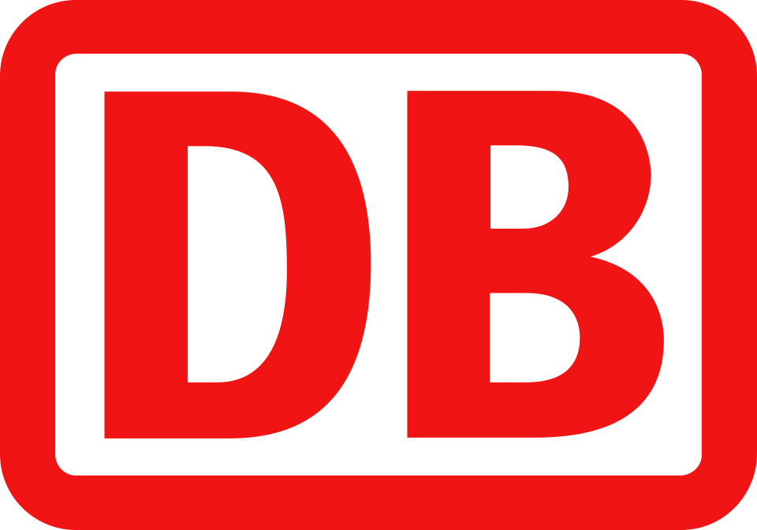
독일철도Deutsche Bahn독일 · 1988년독일철도(Deutsche Bahn)는 베를린에 본부를 두고 독일과 유럽의 여러 국가에서 철도 및 관련 사업을 운영하는 독일의 공기업이다.
바스프BASF독일 · 1865년바스프(BASF)는 독일 루트비히스하펜에 본사를 둔 글로벌 화학 기업이다.
 알디Aldi독일 · 1946년
알디Aldi독일 · 1946년알디(Aldi)는 소품종과 PB상품 중심의 구성을 통해 낮은 가격을 지향하는 독일 최대 할인마트 브랜드이다.
 랑세스Lanxess독일 · 2004년
랑세스Lanxess독일 · 2004년랑세스(Lanxess)는 독일 쾰른에 본사를 둔 특수화학그룹이다.
 벡스Beck's독일 · 1873년
벡스Beck's독일 · 1873년벡스(Beck's)는 독일 브레멘에 본사를 둔 맥주 브랜드이다.
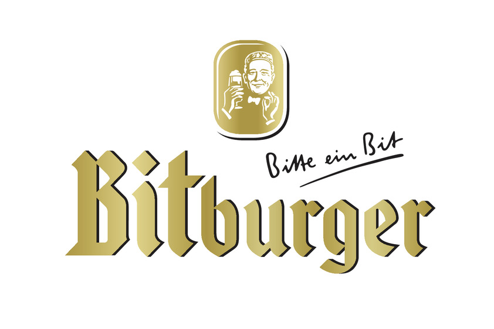
비트부르거Bitburger brewery독일 · 1817년비트부르거(Bitburger brewery)는 독일 라인란트팔츠주 Bitburg에 있는 대형 양조장이다.
전체 목록
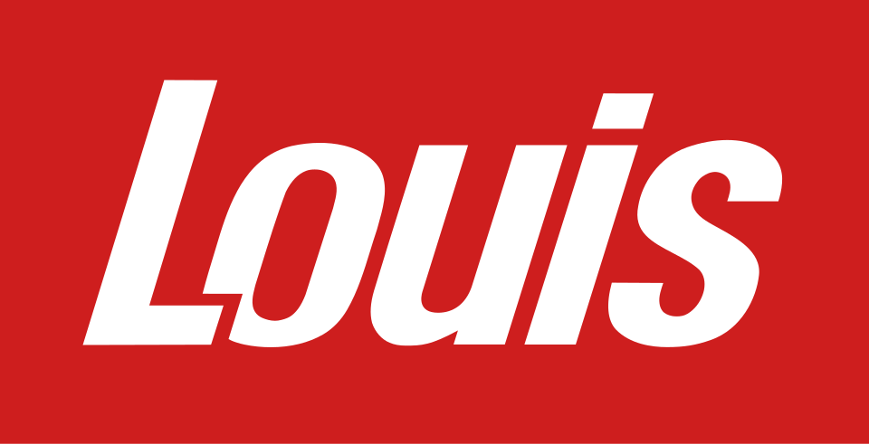
루이스 Louis Motorcycle루이스(Louis)는 1938년 독일 함부르크에서 설립된, 버크셔 해서웨이 소유의 유럽 최대 오토바이 용품·의류 소매업체이다.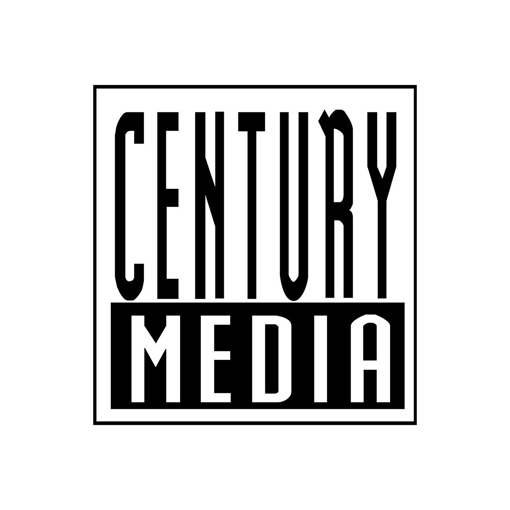
센추리 미디어 레코드 Century Media Records센추리 미디어 레코드(Century Media Records)는 1988년 독일에서 설립된 헤비메탈 전문 음반사이다.슈프링어 Springer Science+Business Media슈프링어(Springer Science+Business Media)는 1842년 베를린에서 율리우스 슈프링어가 설립한, 과학·기술·인문학 분야를 다루는 독일의…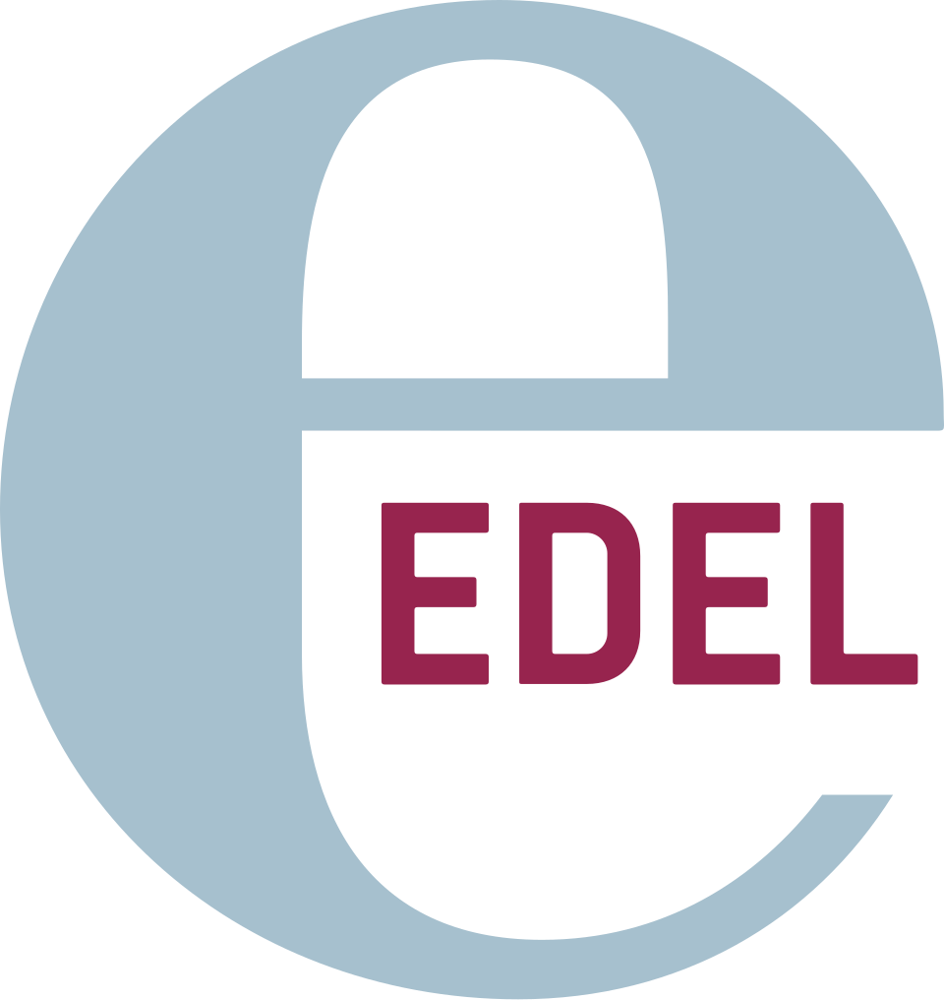
에델 Edel Records에델(Edel SE)은 1986년 미하엘 핸트예스가 독일 함부르크에서 설립한 음악·미디어 기업이다.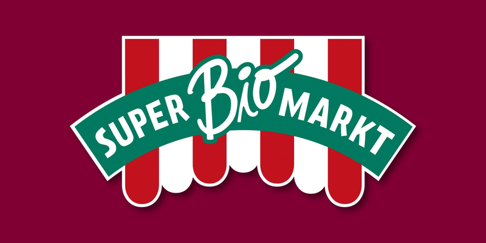
주퍼비오마르크트 SuperBioMarkt주퍼비오마르크트(SuperBioMarkt)는 1973년 독일 뮌스터에서 시작한 유기농 식품 슈퍼마켓 체인이다.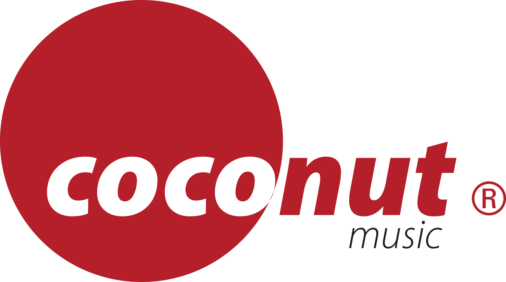
코코넛 레코드 Coconut Records코코넛 레코드(Coconut Records)는 1981년 토니 헨드릭과 카린 하르트만이 독일에서 설립한 음반 레이블이다.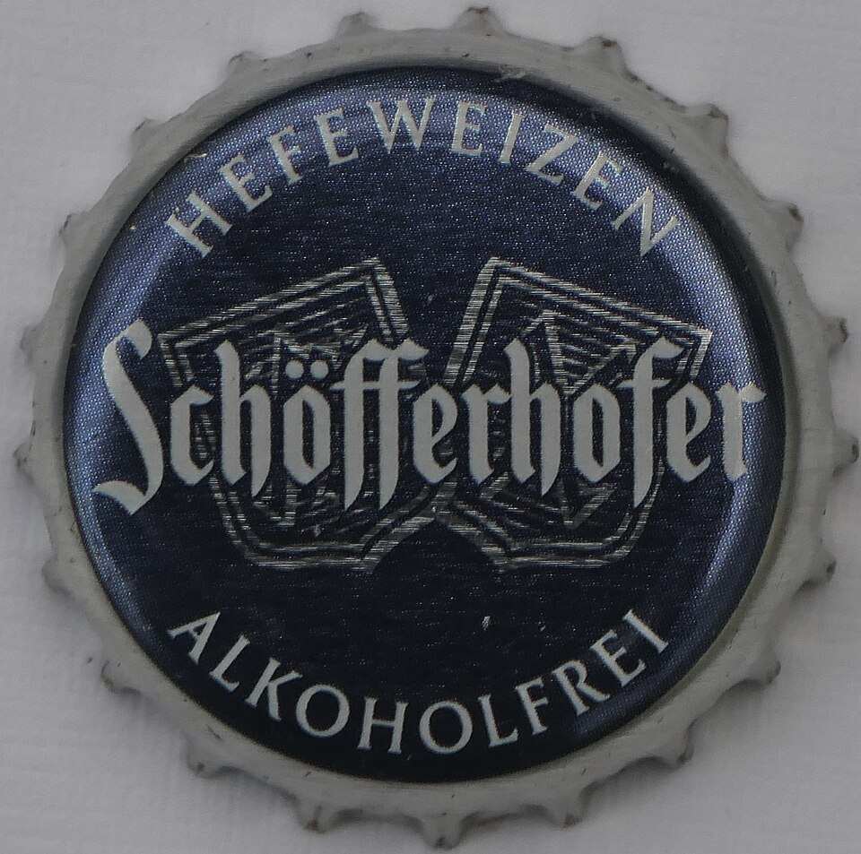
Binding-BrauereiBinding-Brauerei는 독일 프랑크푸르트암마인에 본사를 둔 양조회사이다.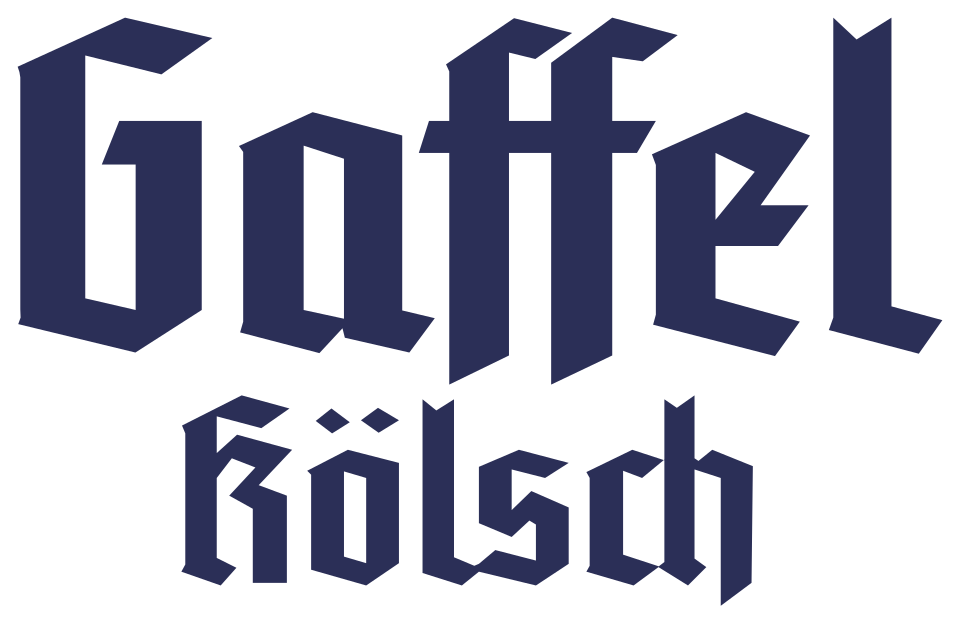
Gaffel Becker & CoGaffel Becker & Co는 1908년 독일 쾰른에서 Becker 형제가 세운 양조장이다.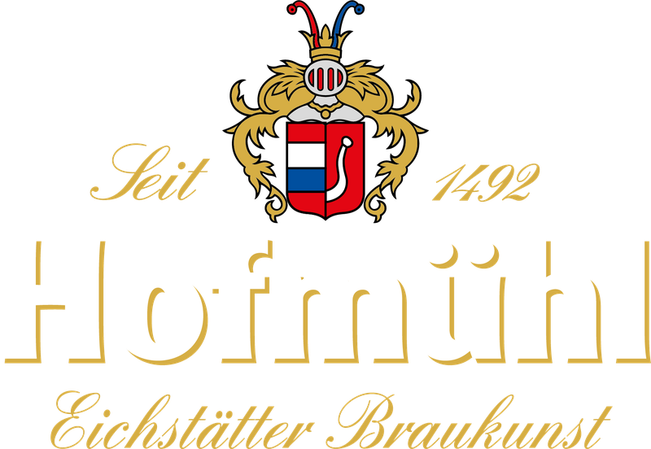
Privatbrauerei HofmühlPrivatbrauerei Hofmühl은 독일 Eichstätt에 있는 맥주 양조장이다.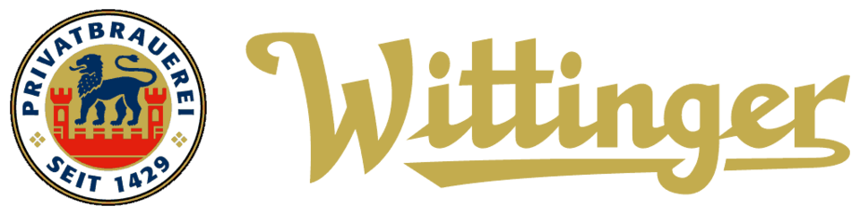
Privatbrauerei WittingenPrivatbrauerei Wittingen은 독일 니더작센주의 Wittingen에 본사를 둔 양조회사이다.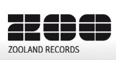
Zooland RecordsZooland Records는 독일의 미디어·엔터테인먼트 브랜드로, 콘텐츠 포맷, 팬덤, 채널 운영, 지식재산권 확장이 함께 작동하는 영역입니다.